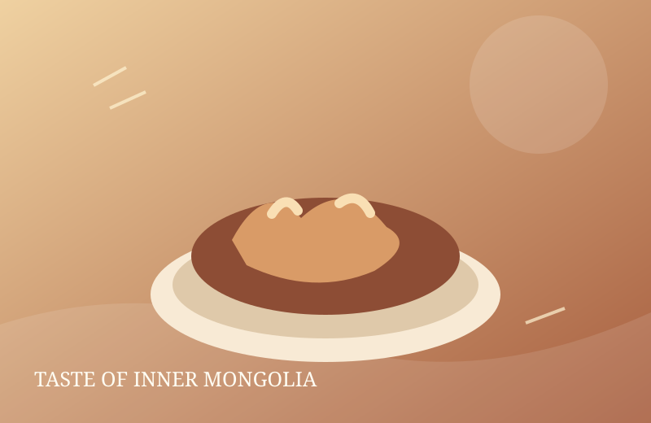
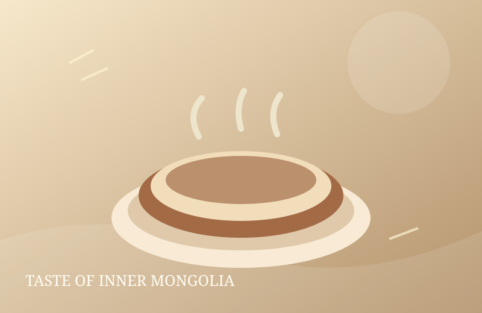
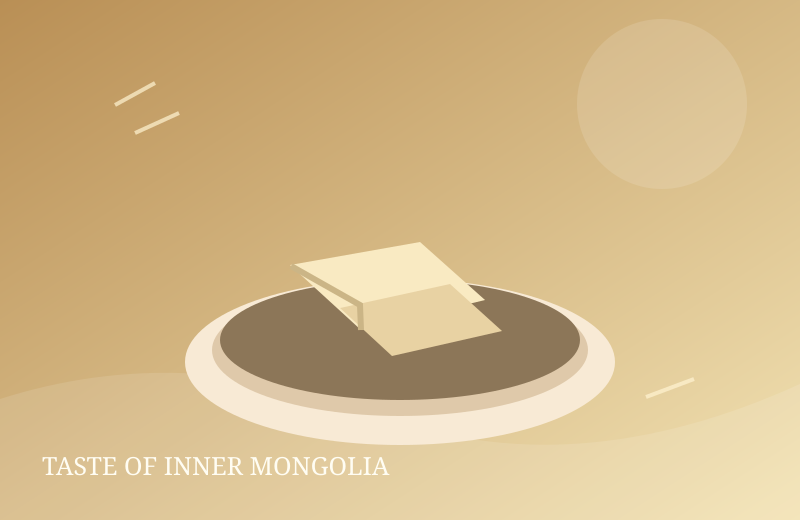

Meat · 手把肉
Shouba Rou
Bone-in lamb gently simmered and served in generous pieces.
SavoryShared dish
Meet the hearty dishes, everyday dairy foods and warm drinks connected with food cultures across the Inner Mongolia Autonomous Region.
Explore the foodMeat, dairy and flour-based foods all have a place in the region’s diverse food traditions. Start with these familiar examples.

Bone-in lamb gently simmered and served in generous pieces.

A warming tea made with milk; salted versions are common in many households.

A family of dairy foods with textures and flavors that vary by preparation.
Pastoral livelihoods, local ingredients, seasonal changes and family customs have all influenced food in parts of Inner Mongolia. But the region is large and culturally diverse: there is no single dish or meal that represents everyone.
Read the cultural notes ↗Use the interactive explorer to filter the featured dishes by meat, dairy, staples or drinks.
Open the food explorer ↗